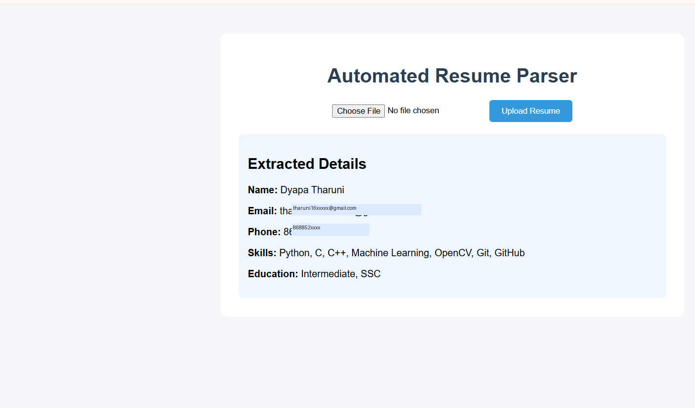
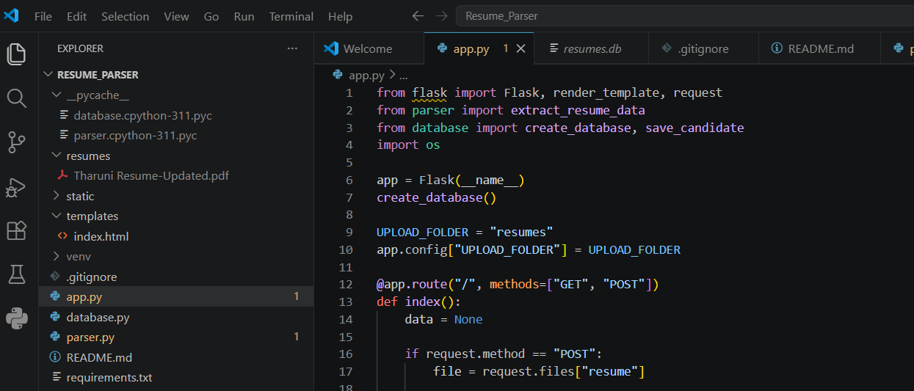

AI Resume Parser
A Flask web app that automatically extracts a candidate's name, contact details, education, and skills from an uploaded resume — turning unstructured documents into structured data recruiters can actually use.
Why I built it
Recruiters spend a lot of time manually reading through resumes before they even get to evaluating a candidate. I built this to automate that first pass — using NLP to pull out the key facts from a resume in seconds, so screening takes less manual effort and candidates get surfaced faster.
My role
- Designed and developed the complete application, front to back
- Built resume text extraction from uploaded PDF/DOCX files
- Built the parser that identifies and extracts candidate information
- Built the upload interface and results display
- Tested and tuned the extraction logic across different resume formats
Stack
The hard part
Every resume is laid out differently, so extracting information reliably was the real problem — there's no single fixed structure to parse against. I combined NLP with regular expressions to handle this: spaCy's entity recognition picked out names and skills, while regex handled predictable patterns like phone numbers and email addresses. Adding a text preprocessing step to clean the extracted content before parsing made a noticeable difference in accuracy across formats.
In action

